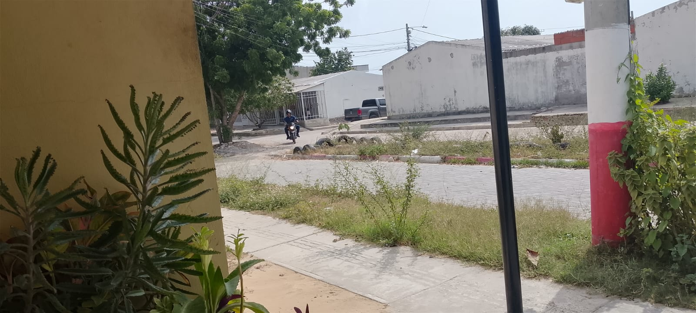
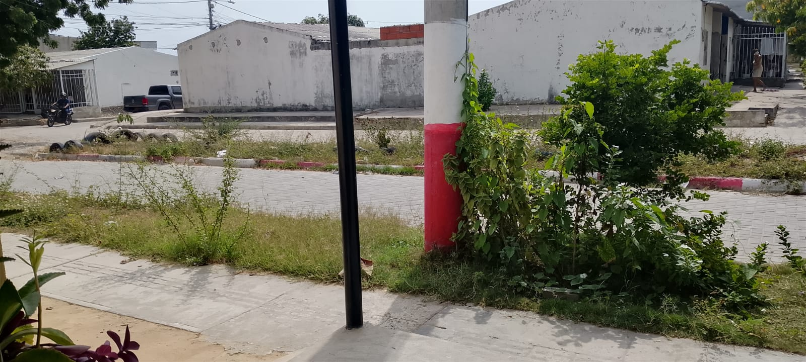
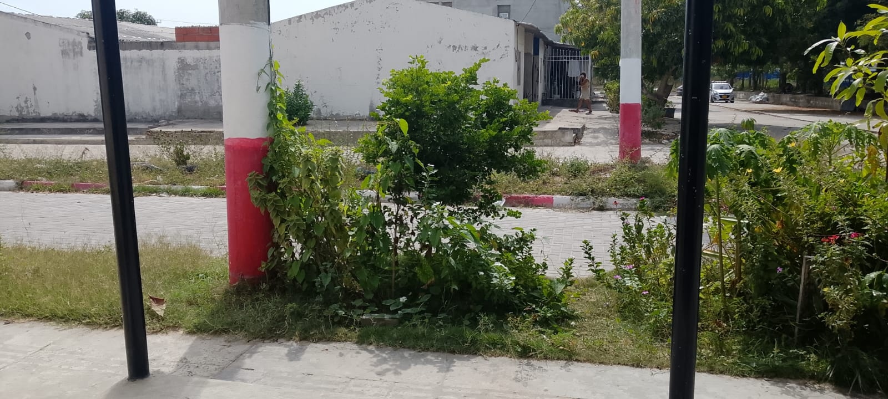
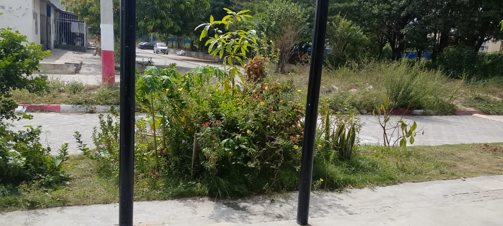

Un espacio de desarrollo, comunidad y modernidad ubicado en el corazón del Atlántico.
Desarrollador y líder tecnológico a cargo de la maquetación, arquitectura web y levantamiento de información geoespacial de la urbanización en Barranquilla.
Diseño senior
responsivo implementado.
Integración de
API de Google Maps GPS activa.
Vistas panorámicas y detalles de la zona urbana registrada.




Visualización de la zona de referencia: Portal De Los Nogales, Barranquilla / Soledad, Atlántico.